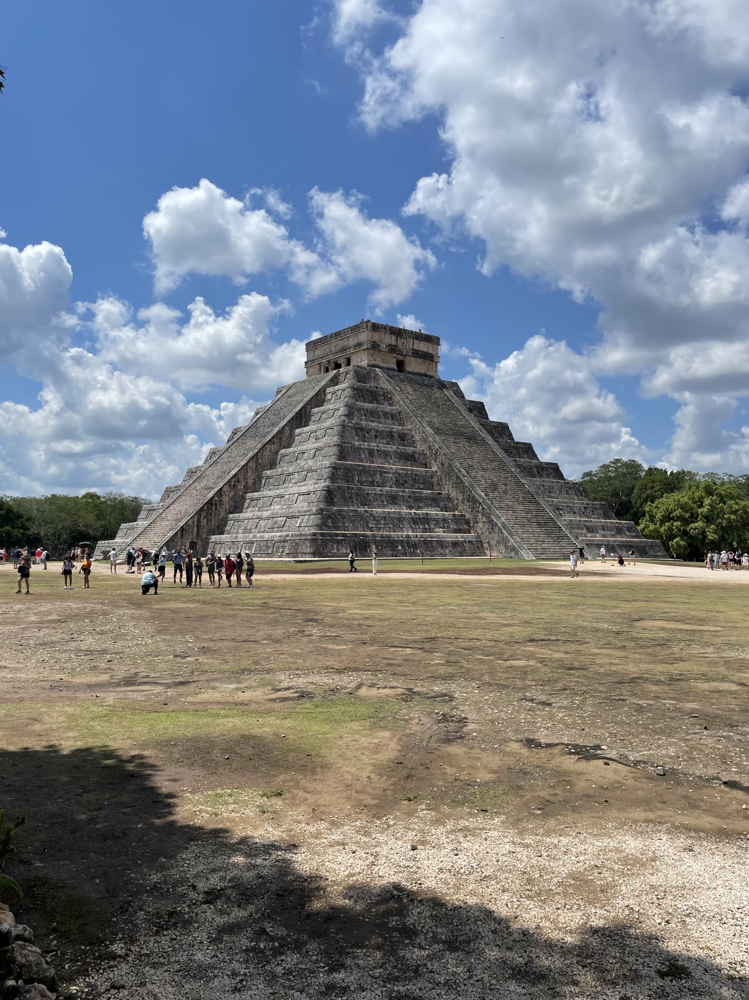

Cancun
Op 8 mei begon onze reis in Cancun. Na een vlucht van .. uur en een overstap in Madrid kwamen we redelijk krokant aan in Cancun. Eigenlijk zou is Cancun ook niet een stad waar ik zelf graag kom. Dat komt door de groote
Isla Holbox
Na een paar dagene in Cancun waren we wel toe aan iets anders. Toen zijn we vanaf Cancun met de bus naar ... gegaan en vanaf daar hebben we de water taxi naar Isla Holbox gepakt.
Valladolid
Valladolid was eigenlijk voor ons een soort tussen plekje op doorreis naar Bacalar. Vanaf hier konden we ook heel makkelijk naar de Chichen Itza dus het was een kleine win win situatie
